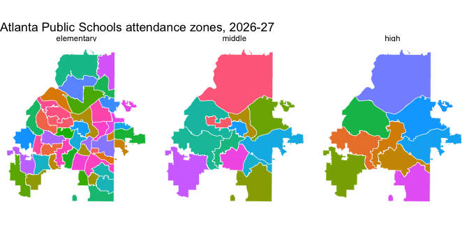

Georgia Civic Data publishes school attendance zones: the areas that assign a home to its zoned elementary, middle and high school. This article maps one district’s zones, checks which schools have no zone and how precise the zones are, and finds the places a location falls in.
The geometry functions return ‘sf’ objects, so install ‘sf’ to map
them. For plain tables, use geometry = FALSE.
Map one district’s zones
zones <- gcd_school_zones(district = "Atlanta Public Schools")
zones |>
sf::st_drop_geometry() |>
count(zone_level, method, accuracy_class)
#> # A tibble: 3 x 4
#> zone_level method accuracy_class n
#> <chr> <chr> <chr> <int>
#> 1 elementary official_gis authoritative_vector 45
#> 2 high official_gis authoritative_vector 9
#> 3 middle official_gis authoritative_vector 13
ggplot(zones) +
geom_sf(aes(fill = school_name), colour = "white", linewidth = 0.2,
show.legend = FALSE) +
facet_wrap(~ factor(zone_level, levels = c("elementary", "middle", "high"))) +
labs(title = "Atlanta Public Schools attendance zones, 2026-27") +
theme_void()
Atlanta Public Schools zones by level; each colour is a school.
The default resolution = "display" returns simplified
polygons for maps. resolution = "full" returns the source
polygons, which are much larger; filter to a district before asking for
them.
Schools without a zone
Charter, magnet, alternative and virtual schools have no attendance
zone. gcd_school_zone_status() says which schools have one
and why the others don’t:
status <- gcd_school_zone_status(district = "Atlanta Public Schools")
count(status, zone_status, no_zone_category)
#> # A tibble: 6 x 3
#> zone_status no_zone_category n
#> <chr> <chr> <int>
#> 1 no_zone alternative 1
#> 2 no_zone charter 16
#> 3 no_zone closed_or_consolidated 2
#> 4 no_zone magnet_or_choice 3
#> 5 no_zone residential_or_treatment 1
#> 6 zoned <NA> 64
attr(status, "note")
#> [1] "Whether each school has an attendance zone on this platform and, if not, why. zoned says only that a zone is published here, not that it covers every grade the school teaches. Not an official enrollment determination: confirm with the school district."How precise are the zones?
Zones come from very different sources. Some are the district’s
official GIS layers; others are digitized from PDF maps, rebuilt from
street lists, or are the whole district outline (in districts with one
school per grade). Every zone says how it was built
(method) and how exact it is (accuracy_class);
treat them accordingly.
coverage <- gcd_school_zone_coverage()
coverage |>
count(zone_level, level_status) |>
tidyr::pivot_wider(names_from = zone_level, values_from = n)
#> # A tibble: 5 x 4
#> level_status elementary high middle
#> <chr> <int> <int> <int>
#> 1 not_available 29 5 10
#> 2 one_school_per_grade 82 130 115
#> 3 partial 10 6 9
#> 4 zoned 59 38 46
#> 5 served_by_other_district NA 1 NAgcd_school_zone_coverage() gives one row per district
and level, with the share of the district’s land and 2020 population its
zones cover, and the reason for anything short of complete:
coverage |>
filter(district_name == "Appling County") |>
select(zone_level, level_status, pct_population, methods, reason)
#> # A tibble: 3 x 5
#> zone_level level_status pct_population methods reason
#> <chr> <chr> <dbl> <chr> <chr>
#> 1 elementary not_available NA district_outline Elementary: T~
#> 2 middle one_school_per_grade 1 district_outline Elementary: T~
#> 3 high one_school_per_grade 1 district_outline Elementary: T~Locate a place
gcd_locate() takes points (lat,
lon) or street addresses and returns the county, Census
tract and block group, school district and zoned schools each falls in,
one row per place.
landmarks <- tibble::tribble(
~landmark, ~lat, ~lon,
"Georgia State Capitol", 33.7490, -84.3880,
"Stone Mountain Park", 33.8053, -84.1455,
"Okefenokee Swamp Park", 31.0558, -82.2701,
"Appling County Courthouse", 31.7782, -82.3482
)
places <- gcd_locate(lat = landmarks$lat, lon = landmarks$lon,
id = landmarks$landmark)
#> i A zone is the default assignment, not the only option: a Georgia student may
#> attend another public school by transfer, or a charter, magnet or other
#> choice school. See attendance_rules for the main ways.
places |>
select(id, geographic_type, geographic_id, geographic_name, grades)
#> # A tibble: 28 x 5
#> id geographic_type geographic_id geographic_name grades
#> <chr> <chr> <chr> <chr> <chr>
#> 1 Georgia State Capitol county 13121 Fulton <NA>
#> 2 Georgia State Capitol tract 13121003500 Census Tract 35 <NA>
#> 3 Georgia State Capitol block_group 131210035001 Block Group 1, ~ <NA>
#> 4 Georgia State Capitol school_district 761 Atlanta Public ~ <NA>
#> 5 Georgia State Capitol elementary_school 761-0199 Centennial Acad~ K-5
#> 6 Georgia State Capitol middle_school 761-0199 Centennial Acad~ 6-8
#> 7 Georgia State Capitol high_school 761-4560 Midtown High Sc~ 9-12
#> 8 Stone Mountain Park county 13089 DeKalb <NA>
#> 9 Stone Mountain Park tract 13089021915 Census Tract 21~ <NA>
#> 10 Stone Mountain Park block_group 130890219153 Block Group 3, ~ <NA>
#> # i 18 more rowsThe output is long: filter it to the rows you need, such as
filter(places, geographic_type == "high_school"). A
school’s geographic_id is its
"DISTRICT-SCHOOL" code, the form gcd_rows()
takes as school_id.
The note column explains any row that is missing or
needs care, such as a level with no zone collected yet:
noted <- filter(places, !is.na(note))
noted |> select(id, geographic_type, geographic_name)
#> # A tibble: 1 x 3
#> id geographic_type geographic_name
#> <chr> <chr> <chr>
#> 1 Appling County Courthouse elementary_school <NA>
writeLines(strwrap(noted$note, width = 76))
#> No elementary school zone has been collected for this district yet.
#> Elementary: The district has separate elementary attendance zones (the
#> Appling County Elementary Complex in Baxley, which is Appling County
#> Primary for pre-K to grade 3 and Appling County Elementary for grades 4-5;
#> Altamaha Elementary; and Fourth District Elementary in Surrency), but no
#> map, street list or online lookup of them is published.Addresses
Addresses are geocoded on your computer with the U.S. Census batch
geocoder; only the resulting coordinates are sent to Georgia Civic Data.
Give one-line addresses or a data frame with street,
city, state and zip:
capitol <- gcd_locate(address = "206 Washington St SW, Atlanta, GA 30334")
capitol |>
select(match_status, matched_address, geographic_type, geographic_name, grades)
#> # A tibble: 7 x 5
#> match_status matched_address geographic_type geographic_name grades
#> <chr> <chr> <chr> <chr> <chr>
#> 1 match 206 WASHINGTON ST SW, ATL~ county Fulton <NA>
#> 2 match 206 WASHINGTON ST SW, ATL~ tract Census Tract 35 <NA>
#> 3 match 206 WASHINGTON ST SW, ATL~ block_group Block Group 1,~ <NA>
#> 4 match 206 WASHINGTON ST SW, ATL~ school_district Atlanta Public~ <NA>
#> 5 match 206 WASHINGTON ST SW, ATL~ elementary_sch~ Centennial Aca~ K-5
#> 6 match 206 WASHINGTON ST SW, ATL~ middle_school Centennial Aca~ 6-8
#> 7 match 206 WASHINGTON ST SW, ATL~ high_school Midtown High S~ 9-12The same lookup for several buildings, from a data frame with one
column per address part. id carries each building’s name
into the output:
buildings <- tibble::tribble(
~building, ~street, ~city, ~state, ~zip,
"Georgia State Capitol", "206 Washington St SW", "Atlanta", "GA", "30334",
"Savannah City Hall", "2 E Bay St", "Savannah", "GA", "31401"
)
located <- gcd_locate(address = buildings, id = buildings$building)
located |>
filter(geographic_type == "high_school") |>
select(id, match_status, geographic_name, grades)
#> # A tibble: 2 x 4
#> id match_status geographic_name grades
#> <chr> <chr> <chr> <chr>
#> 1 Georgia State Capitol match Midtown High School 9-12
#> 2 Savannah City Hall match The School Of Liberal Studies At Sa~ 9-12Overlapping school zones
Some residences are zoned to one elementary school for the early
grades and another for the later ones. In this case, a level has more
than one school row and grades tells them apart. City
Schools of Decatur, for example, split elementary schools between K-2
and 3-5. Therefore some homes in the district will show two elementary
schools:
oakhurst <- gcd_dimension("schools", district_code = "773", q = "Oakhurst",
active = TRUE,
columns = c("school_name", "latitude", "longitude"))
oakhurst
#> # A tibble: 1 x 3
#> school_name latitude longitude
#> <chr> <dbl> <dbl>
#> 1 Oakhurst Elementary School 33.8 -84.3
split <- gcd_locate(lat = oakhurst$latitude, lon = oakhurst$longitude)
split |>
filter(endsWith(geographic_type, "_school")) |>
select(geographic_type, geographic_id, geographic_name, grades)
#> # A tibble: 4 x 4
#> geographic_type geographic_id geographic_name grades
#> <chr> <chr> <chr> <chr>
#> 1 elementary_school 773-0105 Oakhurst Elementary School K-2
#> 2 elementary_school 773-0112 Fifth Avenue Upper Elementary School 3-5
#> 3 middle_school 773-1552 Beacon Hill Middle School 6-8
#> 4 high_school 773-3050 Decatur High School 9-12grade keeps only the school for one grade:
gcd_locate(lat = oakhurst$latitude, lon = oakhurst$longitude, grade = "4") |>
filter(endsWith(geographic_type, "_school")) |>
select(geographic_type, geographic_name, grades)
#> # A tibble: 1 x 3
#> geographic_type geographic_name grades
#> <chr> <chr> <chr>
#> 1 elementary_school Fifth Avenue Upper Elementary School 3-5The default assignment
A zone is the default assignment, not the only option:
attr(capitol, "assignment_note")
#> [1] "A zone is the default assignment, not the only option: a Georgia student may attend another public school by transfer, or a charter, magnet or other choice school. See attendance_rules for the main ways."Students can attend another public school by transfer, or a charter, magnet, or other choice school option.
See Georgia Civic Data’s article School Zones and School Choice in Georgia for more information.